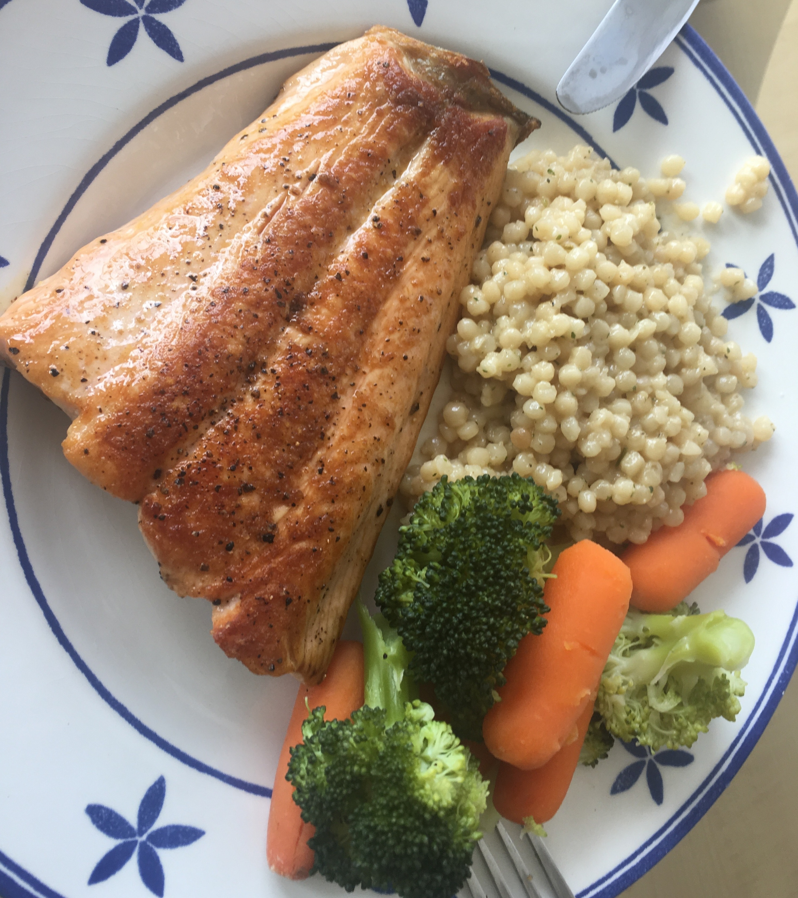

Salmon and Veggies

Description
This is more of a blueprint on how to make a dinner with fish as the protein with some vegetables & grains.
Ingredients
- Fish (Salmon, Trout, something with skin on)
- Vegetables (Carrots, Broccoli/Broccolini, Onions, Garlic, whatever you like)
- Grain (Couscous, Barley, Rice, Rice Pilaf, or just leave out and replace with a salad or
more veggies)
- Salt to taste (a few four finger pinches)
Steps
- Start cooking your grains as they'll take the longest or be fine to sit warm
- Chop vegetables into whatever shape makes sense to you
- Remove any bones if there are any, then salt the skin side of the fish
- Grab your pan and heat it up on medium (I use non-stick for fish) then add oil when hot enough
- Put your fish skin side down in the oil. It should sizzle. If it doesn't, take it out and wait. Once it's
sizzling, season the face-up side with salt
- Start cooking your vegetables however you know how. I usually saute or steam mine, but you could oven roast
them too
- Cook the fish skin side down until the flesh changes opacity and color up about halfway to 2/3 up the fish.
- Flip the fish and cook until the sides look completely cooked through and opacity changes. If the fish shape
allows, you can cook the sides too for a little extra sear
- Whenever the vegetables are done (could happen earlier) set those aside
- Plate the dish
Home